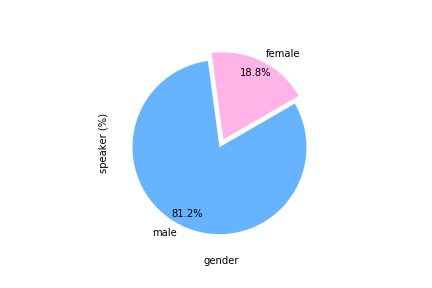
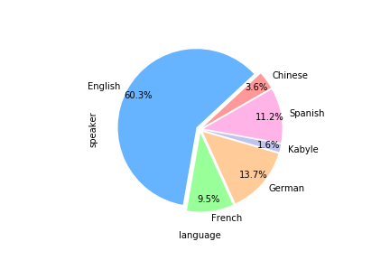
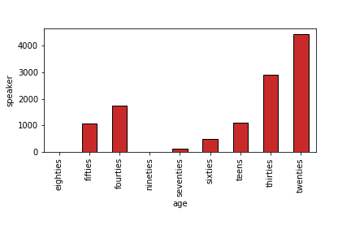
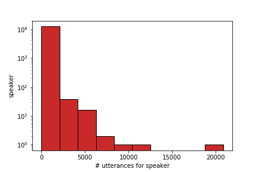

The human voice conveys unique characteristics of an individual, making voice biometrics a key technology for verifying identities in various industries. Despite the impressive progress of speaker recognition systems in terms of accuracy, a number of ethical and legal concerns has been raised, specifically relating to the fairness of such systems. Our work aims to explore the disparity in performance achieved by state-of-the-art deep speaker recognition systems, when different groups of individuals characterized by a common sensitive attribute (e.g., gender) are considered. In order to mitigate the unfairness we uncovered by means of an exploratory study, we investigate whether balancing the representation of the different groups of individuals in the training set can lead to a more equal treatment of these demographic groups. Experiments on two state-of-the-art neural architectures and a large-scale public dataset show that models trained with demographically-balanced training sets exhibit a fairer behavior on different groups, while still being accurate. Our study is expected to provide a solid basis for instilling beyond-accuracy objectives (e.g., fairness) in speaker recognition.
>
Statistics
Here you can find some statistics about the dataset.
1.046.078
Utterances
The data we collected includes individuals that span from different countries and different languages (i.e., Chinese, French, German, English, and Kabyle)
12.057
Speakers
Each speaker declared some sensitive attributes, i.e., his/her accent, age, and gender.

Gender Statistics
Speaker distribution across lenguage.

Language Statistics
Speaker distribution across languages.

Age Statistics
Age distribution across speakers.

Utterances per Speaker
Utterance distribution across speakers..
Download
Here you can find the code and the dataset used for the test, if you want to download the dataset please compile the form at the following
Exploring Algorithmic Fairness in Deep Speaker Verification.
Integrating voice commands into modern automated systems can support individuals to manage data (e.g., messages) or perform actions (e.g., payments), safely and easily.
To accomplish voice-based tasks, automated systems are often required to match the speaker’s voice to a unique digital identity for verification. Despite high accuracy,
it remains under-explored how speaker identity verification models could be influenced by the inherent characteristics of the individuals and unfortunately discriminate against a
legally-protected class of users, identified by a common sensitive attribute. In this paper, we explore how state-of-the-art speaker verification models are susceptible
to unfairness towards different demographic groups of users, according with their gender and age. To this end, we collected and capitalized on a voice dataset representing
different demographic classes in order to assess how speaker verification models perform across users' groups. Experiments show that users belonging to certain demographic
groups systematically experience higher error rates, highlighting the need of fairer speaker verification.
Bibitex
@article{
author={Fenu, G. and Lafhouli, H. and Marras, M.},
title={{Exploring Algorithmic Fairness in Deep Speaker Verification}},
journal="",
year={2020}
publisher={Proceedings of the 20th International Conference on Computational Science and its Applications (ICSSA2020). In Press. Springer}
}
Improving Fairness in Speaker Recognition.
The human voice conveys unique characteristics of an individual, making voice biometrics a key technology for verifying
identities in various industries. Despite the impressive progress of speaker recognition systems in terms of accuracy, a number of ethical and legal
concerns has been raised, specifically relating to the fairness of such systems. In this paper, we aim to explore the disparity in performance achieved
by state-of-the-art deep speaker recognition systems, when different groups of individuals characterized by a common sensitive attribute (e.g., gender)
are considered. In order to mitigate the unfairness we uncovered by means of an exploratory study, we investigate whether balancing the representation of
the different groups of individuals in the training set can lead to a more equal treatment of these demographic groups. Experiments on two state-of-the-art
neural architectures and a large-scale public dataset show that models trained with demographically-balanced training sets exhibit a fairer behavior on
different groups, while still being accurate. Our study is expected to provide a solid basis for instilling beyond-accuracy objectives (e.g., fairness)
in speaker recognition.
Bibitex
author={Fenu, G. and Medda, G. and Meloni, G. and Marras, M.},
title={{Improving Fairness in Speaker Recognition}},
journal="",
year={2020}
publisher={ Proceedings of the 2020 European Symposium on Software Engineering }
}